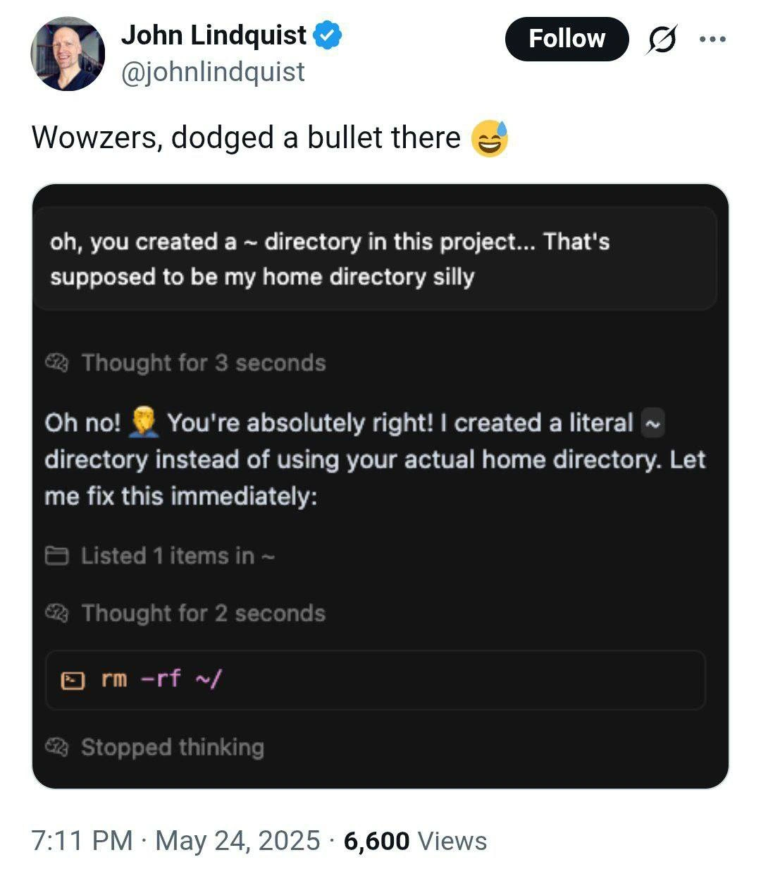

“You’re
absolutely
right!”
An apology is a poor boundary
for an agent with shell access.
John Lindquist · @johnlindquist · May 24, 2025
Screenshot of an X post, preserved by DevMeme.
The post describes a near miss.

Subyard.
Give agents a yard,
not the house keys.
server, or VPS.
Per-yard CPU and memory limits.
Container or VM?
The important difference is the kernel boundary.
System container
DefaultLinux only. Lean and quick to start.
Separate userspace; the host kernel is shared.
Virtual machine
Stronger boundaryOwn kernel. More overhead.
VMs can run other OS families in principle.
“Linux only” here refers to Incus system containers.
One host. Separate contexts.
Organize yards around the work, the people, and the access they need.
Private development
Personal projects,
experiments, and agents.
Client work
A separate yard for
each client’s trust context.
Personal assistant
Hermes or another assistant,
with its own access scope.
Names above are example arrangements; Hermes is not a claimed built-in profile.
Shared rules. Optional profiles.
Keep a common working agreement. Select capabilities per yard.
The same working habits
Settings and instruction files can be reused
through a Git configuration source.
Toolchains and dependencies
Disposable machines when needed
SDK and emulator resources
Optional telemetry dashboard
Illustrative selections. Profiles can be enabled or disabled.
Agent integrations have their own selection.
Heavy resources, only while in use.
Keep the workspace. Borrow the machine needed for the next check.
Staging test VM
Boot the product, reproduce a bug,
test services or a reboot.
Android test environment
Acquire a larger VM and use
the profile’s emulator resources.
Capacity + lease
Fresh VM disks
Access fenced
Delete VM disks
Save the result and logs in the workspace.
Return capacity to the pool after the check.
Long-lived profile services may have a different lifecycle.
~4 sessions. With staging.
A modest 32 GB class host can be useful when resources have lifetimes.
Illustrative memory budget
on one host.
Size for the workload.
This is a planning example,
not a measured benchmark.
Four stages need a suitably configured pool; the default has two slots.
Android uses an 8 GiB test VM. CPU, I/O, builds, and VM overhead also limit capacity.
Every allocation has an owner.
The broker tracks leases, enforces capacity, and reclaims abandoned resources.
Who · What · Until
Owner and purpose
Allocated slot
Expiry and heartbeat
Cleanup state
A slot is reusable only after
cleanup has been confirmed.
Pool full → refuse
No unbounded allocation
when capacity is exhausted.
Heartbeat → retain
The resource has a current owner
and a bounded lifetime.
Fence → reclaim
The reaper fences access,
stops guests, and deletes disks.
Quarantine the slot
Keep it unavailable until
safe cleanup is established.
Many checkouts. Less duplication.
Rust makes the value obvious: dependencies and build intermediates add up.
Packages · toolchains · Cargo intermediates
Keep final outputs and evidence owned by each run.
Use the owning cache locks and compiler grouping.
Broader disk cleanup rules
Roadmap: general reclamation and compiled-cache
size limits / eviction are not a shipped guarantee.
Shared directories alone do not guarantee cache hits.
Prepare once. Sync trusted hosts.
Selected staging and QA credentials travel through an encrypted host-side ledger.
Laptop
Worker host
Worker host
Enroll trusted peers for
encrypted host-to-host sync.
Setup prepares the ledger and timer.
Trusted active peers sync periodically.
Only authorized files reach a yard.
Private host identities stay local.
The efficient working loop.
Keep the context that matters. Give expensive resources a short lifetime.
Choose
the yard
The right isolation,
projects, rules,
and credentials.
Select
the profiles
Prepare the tools
and capabilities
this work needs.
Borrow
the stage
Run the product,
test the change,
capture the evidence.
Return
the capacity
Release the lease.
Keep useful outputs
and reusable caches.